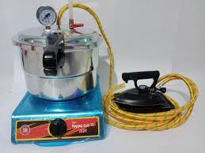
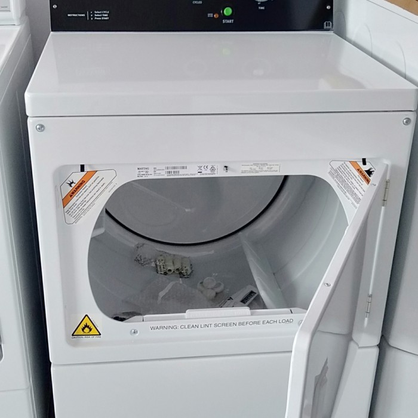
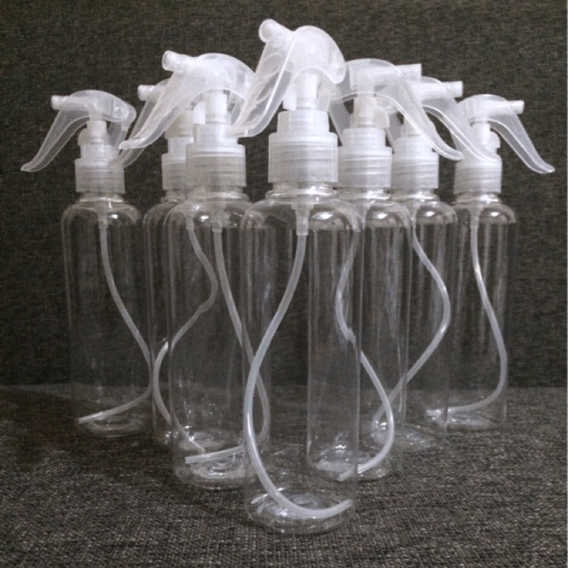

Smart Wash, solusi laundry modern dengan keunggulan terbaik! Kami menggunakan setrika uap untuk hasil setrika yang lebih rapi, mesin pengering dan mesin cuci berkualitas tinggi untuk menjaga pakaian Anda tetap awet, serta dilengkapi dengan pengharum pakaian premium yang menyegarkan. Dengan pelayanan yang ramah dan profesional, kami memastikan kepuasan Anda adalah prioritas utama!"

Mesin Cuci
dirancang untuk mencuci pakaian secara efisien, hemat waktu, dan tenaga. Menggunakan kombinasi udara, deterjen, dan gerakan mekanis, mesin cuci mampu membersihkan pakaian dari kotoran, noda, dan bau. Dengan fitur modern seperti pengaturan siklus, pencucian hemat energi, dan pengeringan otomatis, mesin cuci menjadi solusi praktis untuk kebutuhan sehari-ha

Setrika Uap)
1Cepat dan Rapi : Menghilangkan kerutan dengan lebih efektif dan cepat, bahkan pada kain tebal.
2.Aman untuk Semua Kain : Dapat digunakan pada berbagai jenis kain tanpa merusaknya.
3.Multifungsi : Selain menyetrika, dapat menghilangkan bau dan noda serta menyegarkan pakaian.
4.Mudah Menyetrika Detail : Efektif pada area sulit seperti kerah dan lipatan kecil.
5.Hemat Waktu : Tidak memerlukan tekanan keras, proses lebih cepat.
6.Membunuh Bakteri : Uap panas membantu membunuh kuman dan menghilangkan bau.
7.Praktis (Model Vertikal) : Dapat digunakan tanpa meja setrika, ideal untuk pakaian besar.
8.Mengurangi Kerusakan Kain : Minimalkan risiko pakaian terbakar atau rusak.

Pengering Modern
1.Cepat Kering : Menghemat waktu dibandingkan menjemur.
2.Praktis : Cocok untuk cuaca buruk atau ruang terbatas.
3.Pakaian Lembut : Hasil lebih halus, terutama pada handuk dan kain tebal.
4.Hindari Bau Apek : Mencegah bau akibat lembap.
5.Efisien untuk Pakaian Tebal : Jaket dan selimut cepat kering.
6.Tempat Hemat : Tidak perlu jemuran yang luas.

Parfum Favorit(rahasia)
1.Hadirkan aroma segar yang tahan lama di setiap helai pakaian Anda dengan parfum laundry unggulan kami!
2. Wangi premium, kesegaran maksimal – hanya dengan parfum laundry pilihan terbaik.
3."Nikmati sensasi kesegaran sepanjang hari dengan parfum laundry kami yang istimewa."
4."Parfum unggulan untuk pakaian yang bukan hanya bersih, tapi juga memikat."
5."Pakaian wangi segar, percaya diri sepanjang hari – berkat parfum laundry berkualitas tinggi."
6."Parfum laundry kami memberikan sentuhan istimewa pada cucian Anda dengan wangi yang elegan dan tahan lama.